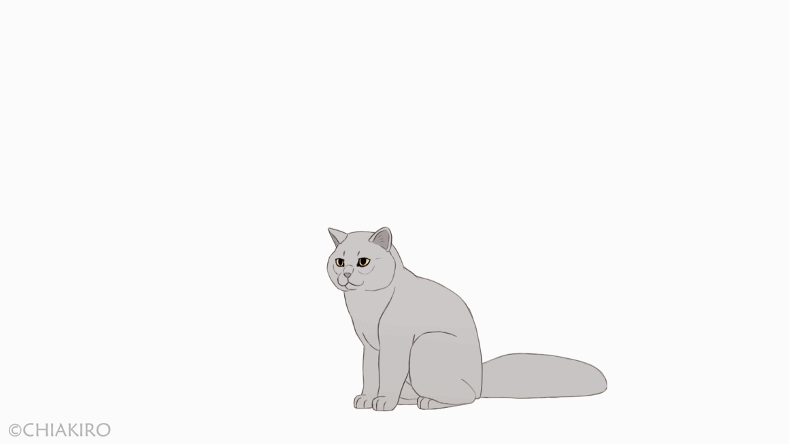
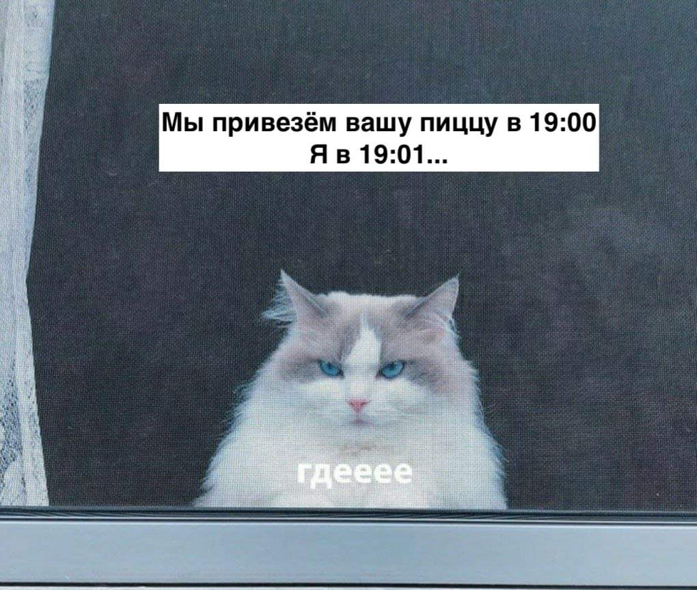
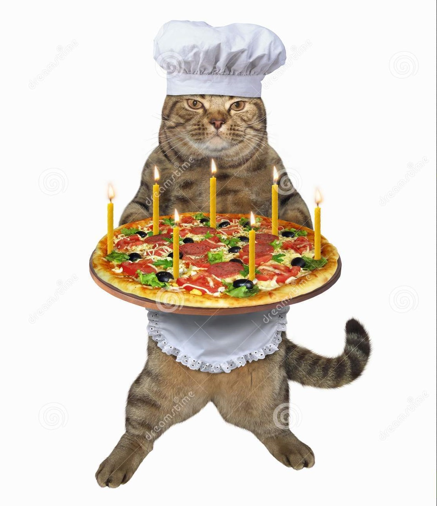
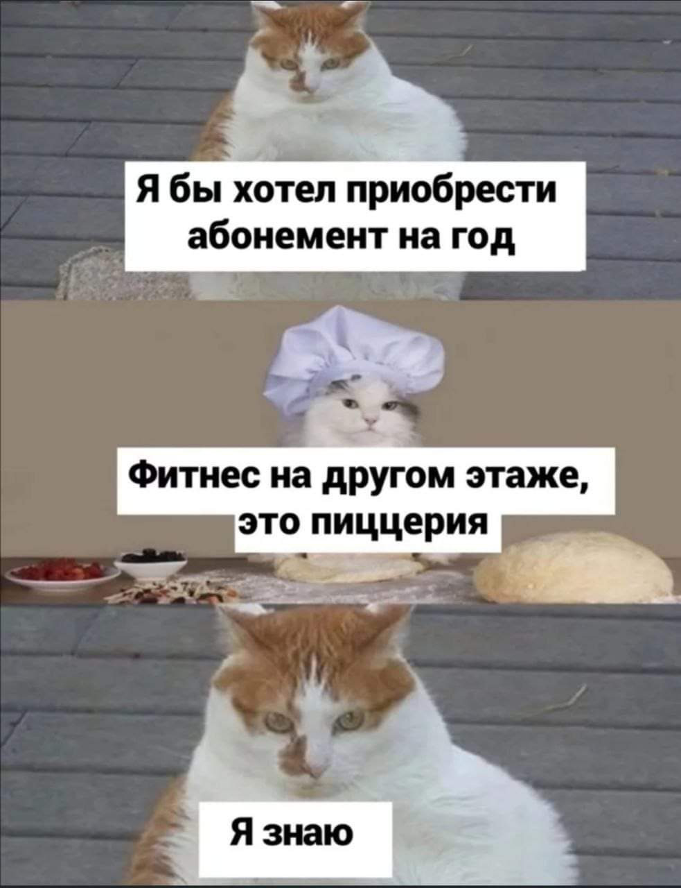
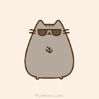

В кофейне.
В кофейне всего два человека и оба с ноутами. Один пишет код и такой на чилле и расслабоне, а второй сидит весь в напряжении. Подавал ему американо только что, а он оказывается мемы с котами все подряд сохраняет.

Хьюстон у нас проблемы.
Звонит мне жена:
- кот пришел, сел на клавиатуру и экран погас.
Я, понимая, что наверно нажалось комбинация переключения экранов, сначала попытался объяснить какие
значки на клавиатуре надо искать... Потом понял, что долго и сказал, что прийду вечером, посмотрю.
Перезванивает.
- Вечно ты, всем помогаешь, а мне не можешь. Все. Сама все починила, без тебя.
- Как? - Спрашиваю.
- На клавиатуру опять кота посадила. Все заработало.

Я вольнонаемный сотрудник

А может все таки лучше оставить???
Ремонтировал ноут ветеринара.
xxx: А ты уверен что это можно удалять?
yyy: Да все норм...
xxx: А у меня точно все будет нормально работать?
yyy: Все что нужно будет работать не переживай.
xxx: А может лучше оставить?
yyy: Слушай ты когда котов кастрируешь, они тоже тебе советы дают?

Любопытство и власть
Мне мой кот напоминает наше правительство. Везде суёт свою морду, до всего ему есть дело. При этом нигде он в общем-то не нужен. И без него всё прекрасно делается
Любителям пиццы и котиков посвящается
  Gangam band
